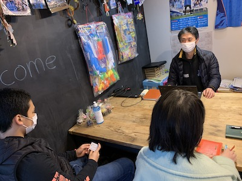
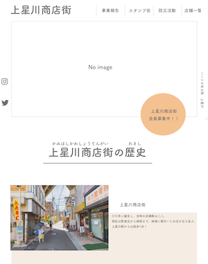
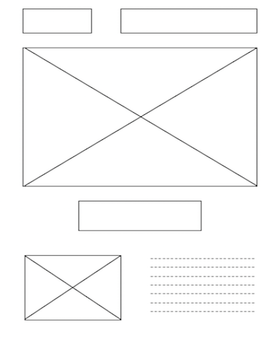
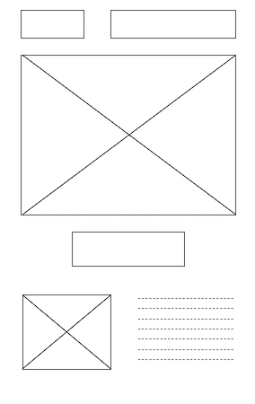
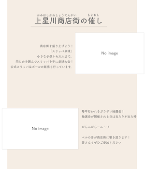

progress

-
STEP1
９月商店街作成プロジェクトが始動 -
STEP2
10月普段の様子を下見して実際の商店街の雰囲気を調査しました。 -
STEP4
12月催しに参加して地域の雰囲気やお店の取材を行いました。 -
STEP5
現在デザイン案の返答待ちです。
design



commitment

○配色
○心がけたこと
| #EBDAC9 | #F4C291 | #707070 |
商店街の課題である若年層の課題を解決するために、催しの写真を大きく表示しました。
配色やフォントはどんな世代にも親しみを持ってもらえるような暖かい配色にしました。
先方との話し合い後に全体で確認ができるように報告書の作成・共有などを行っています。
technology
slack
新型コロナウイルスでなかなか顔を合わせた話し合いができないという課題もありましたが、Slackなどのツールを使用することでデータの共有など情報を円滑にやりとりしました。
Adobe XD
デザイン案の作成を行いました。
HTML・CSS
デザイン案をもとに仮のコーディング中です。